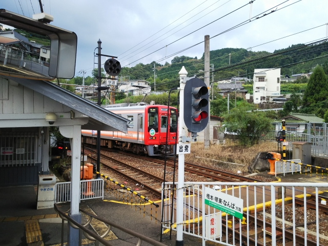

2022（R4） 9月下旬 本稼働の頃
和歌山のユーザが無事本稼働を迎えたので、泊りがけで立ち会いに行ってました。
本稼働の前日、今日は順調に終わったので早めに帰宅します。
橋本駅に着くと、あれ？特急？なんでロングシートやねん。
車庫で事故ったのはだいぶ前やったと思うのですが、その影響かどうか、
特急りんかんが一部日程で運休のようです。
その代走として（みつくにではありません）、料金無料の特急が走ってま
した。
車両の端にあるボックス席に座れたので、特急気分を堪能できました。
稼働翌日の早朝。
本稼働立会いも、初日が順調だったので、ちょっと
寄り道を。
ホテルが駅から遠いので、自転車を借りて橋本駅へ。
こんな早朝に自転車借りるなんて怪しい客と思われ
てることと思います。もちろんフロントの人はプロ
なので、そんなことおくびにも出しません。
駅前には、なぜかまことちゃんの像が。あんまり似てないのでちと怖い・
・・
梅図かずおがこのあたりの出身みたいです。
ＪＲと南海のホームが並んでます。和歌山線は完全
に新型車両に置き換わっています。
南海のホームへ。そろそろ全廃のうわさもある６０００系が停まって
ます。調べてみたらこの車両、昭和４３年９月製でした。同い年っす。
極楽橋行きは転換クロスシート車なので、一度乗っ
てみたかったっす。
こっちに乗りこみます。
昔、終点やった高野下駅に到着。
降りてみることに。
無人駅ですが、駅舎がホテルになってるようです。
部屋番号が看板形式になってる！
さすが山岳路線、線路が高いところにあるので駅前
にでるのに階段があります。
森林鉄道があったとは知りませんでした。
この駅舎の下あたりを森林鉄道の線路が通ってたみ
たいです。
なかなかしぶい駅ですね。
高野山へ行くバスがここから発車していて、この地
域の一大ターミナルやったんですね。宿もたくさん
あったみたいです。
階段の横の壁には古い写真が。
森林鉄道の写真もありました。
駅は昔と変わってませんね。
ホーム屋根の支えには古いレールが使われてるみた
いです。
ホームにレールの説明の展示がりました。
来た甲斐ありました。こんな時やないと来られへん
からね。
って、こんな時に普通は来んて！
極楽橋方面から電車が降りてきました。これに乗っ
て戻ります。

橋本到着。６０００系が停まってたのでこいつも撮っときます。

逆光で分かりにくいですが、紀ノ川を渡る鉄橋です。
さて、今日も仕事仕事・・・
さて、立会い最終日。それなりに問題もありつつも
すんなり帰れる状態に。
いつもは和歌山線の紀伊山田まで歩いて行くのです
が、せっかくなので学文路駅までやってきました。
この駅も、古い駅舎が残ってますね。

ちょうど極楽橋駅行きが入ってきました。
構内踏切もありますね。
この駅、入試シーズンには学駅と並んで、「受験の
縁起物」として入場券を売っているので、聞いたこ
とはあったのですが、こんなちゃんとした駅とは知
りませんでした。
すんなり帰宅したいところですが、運悪く枚方のユ
ーザの夜間作業の立会いに行かんとあきません。
あ～しんど。